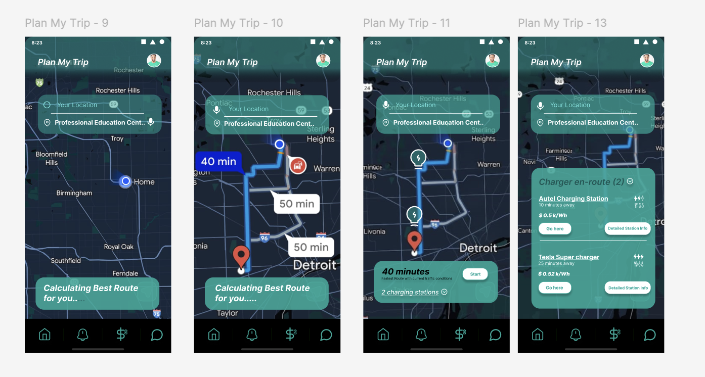
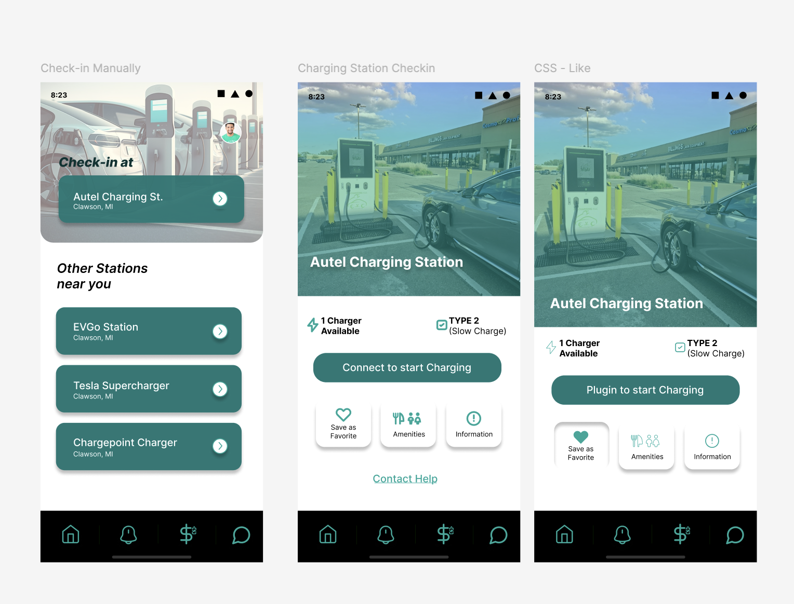
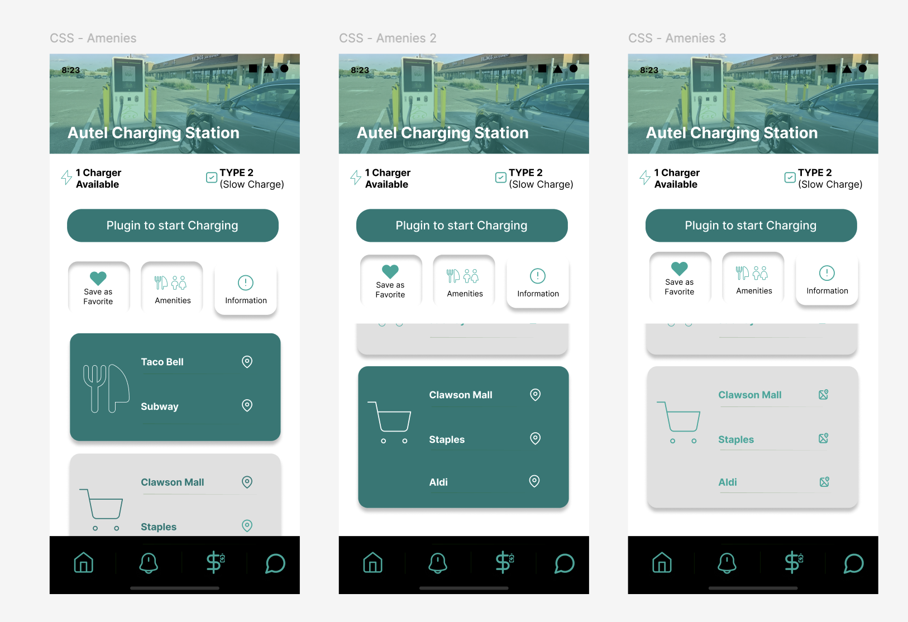

The electric vehicle marketplace is fragmented. Drivers suffer from "Range Anxiety", not because cars lack range, but because the charging infrastructure is unreliable and the software experience is broken. Users are forced to juggle multiple apps, carry physical RFID cards, and frequently arrive at broken chargers with no recourse.
This isn't an engineering problem. The chargers exist. The network exists. The failure is in the interface layer, the apps that are supposed to make EV ownership effortless have become a source of anxiety themselves.
Research combined peer-reviewed literature, industry reports, and anecdotal community evidence (Reddit EV forums, owner Facebook groups) to triangulate pain points across all user types and vehicle brands. The matrix analysis revealed that payment interface and reliability were the most consistent issues regardless of which source was consulted.
Sam bought a Chevy Bolt six months ago, she was excited about the environmental impact and lower fuel costs. She commutes 18 miles daily with no issues. But today she's planning her first road trip to San Antonio, 80 miles away. She's never charged anywhere other than her home charger, and the prospect of finding a working station en-route fills her with genuine anxiety.
Sam opens ChargePoint to plan her route. She searches for stations between Austin and San Antonio. Three appear, but none have ratings, reviews, or any indication of whether they're functional.
😬 Anxious, which one can she trust?She picks the closest station, a ChargePoint unit in a Walmart parking lot, 38 miles out. She drives there, pulls up to the charger, and sees an "Out of Service" sticker across the payment terminal.
😤 Frustrated, she drove out of her way for nothingThe next nearest charger is 8 miles away, but it's an EVgo station, which requires a different app and a monthly subscription she doesn't have. She downloads the app, creates an account, and enters payment, a 12-minute ordeal in a parking lot.
😔 Defeated, this is not what EV ownership was supposed to feel likeShe makes it to San Antonio with 11% battery remaining. On the way home she takes I-35 instead of the scenic route, the same route she always takes in her old car, because she doesn't know which charging options exist on the other road.
😶 Resigned, the car is great but the ecosystem is brokenWe mapped user flows across market leaders (EVgo, ChargePoint) and OEM apps (Tesla, Nissan) to pinpoint exactly where users drop off or feel frustrated. The competitive matrix confirmed that no existing app addresses the full end-to-end charging experience.
| App | Strength | Critical Gap | Payment | Our Opportunity |
|---|---|---|---|---|
| EVgoEVgo Inc. · 2010 | Large DC fast-charging network; good urban coverage | Physical RFID card required at legacy stations; monthly subscription barrier | App or RFID card, not universal | Remove RFID dependency; app-only universal access |
| ChargePointChargePoint Inc. · 2007 | Largest network coverage; broad station availability | Per-month vs. pay-as-you-go pricing is confusing; no cross-network payment | Monthly plan or PAYG, inconsistent pricing | Flat per-session or per-kWh pricing, transparent and predictable |
| TeslaTesla Inc. · 2008 | Seamless in-vehicle + app integration; Supercharger reliability | Tesla-only ecosystem; completely useless for non-Tesla owners | Seamless, but locked to one brand | Cross-brand equivalent experience for all EV owners |
| All NetworksIndustry-Wide Gap | Coverage exists for most major highways | Zero user reviews, zero amenity info, zero safety data at station level | Fragmented, different per-network | Community reviews: safety, amenities, real-time reliability ratings |
Based on the competitive gaps and research findings, we brainstormed features that address not just location-finding but the full end-to-end charging experience, from pre-trip planning to active session management to post-charge battery insights.
Tracks degradation over time and shows how charging habits impact battery longevity. Sam can see whether her Level 2 vs. DC fast charging ratio is affecting her battery, and make smarter long-term decisions as a result.
Users set a threshold (e.g., 20%). When the battery drops below it, the app proactively pushes a notification and surfaces the nearest available, working station, not just any station on the network.
One payment method, stored in the app, works across all charging networks. No separate accounts, no RFID cards, no network-specific memberships. Sam charges at any station with a single tap.
User-generated ratings on reliability, safety, amenities, and wait times. "Well-lit lot, 24hr Whataburger across the street, charger worked perfectly last Tuesday." The information Sam actually needs before committing to a 38-mile detour.
Account Creation → Login → Enter Car Brand/Model → Save Profile. Car profile enables smarter recommendations: compatible charger types, estimated range on current battery, optimal charging curve suggestions.
Enter destination → App calculates charge needed → Suggests optimal charging stops → Shows real-time station status for each → One tap to add stop to route. Sam never plans a trip in two apps again.
Low Battery Notification → App shows 3 nearest working stations → User selects one → Gets ETA and navigation. The key word: working. Real-time IoT status data, not cached network data from 48 hours ago.
Select Station → Start Session → App monitors session in real-time (kWh delivered, cost, time remaining) → Payment auto-processes at session end. One flow. Zero app-switching. Zero RFID.
The UI was built for glanceability, large touch targets, high-contrast status colours, and a map-first layout that works with one hand while standing at a charger. Green = working. Red = issue. Yellow = unknown. Sam should know the status of a station in under 2 seconds without reading a single word of text.



EV charging is an infrastructure problem that's being solved with software. The lesson from this project: the hardware gap is closing fast, but the UX gap is widening. As charging networks expand, the complexity of navigating them increases, and the role of the interface layer becomes more critical, not less.
Interact with the fully clickable high-fidelity Figma prototype covering all four user task flows, from trip planning to in-session payment.